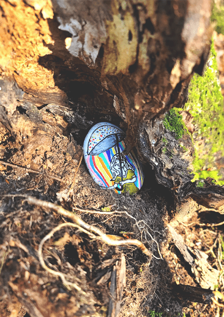
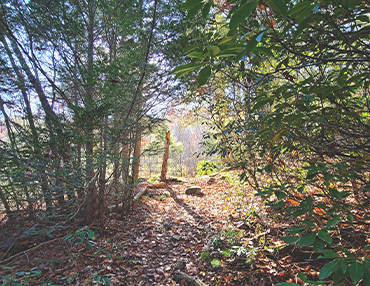
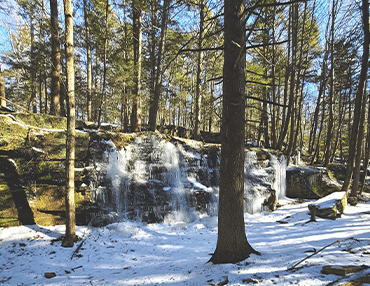
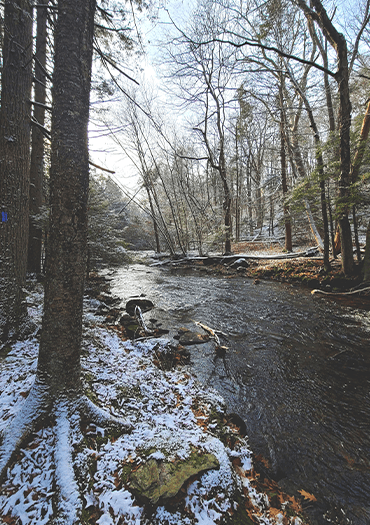
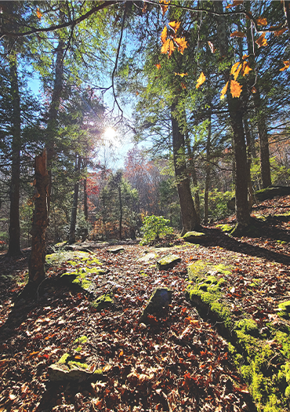
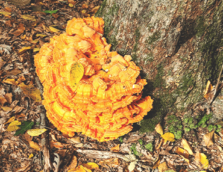

Check out some random photos from my hikes
Trumbull is full of parks and trails. I'm lucky enough to live near most of them to enjoy them on a regular basis!
I've really leaned into hiking over the past two years. It is a good way to get out, decompress, and build strength!
Below are two of my favorite places to hike around Trumbull; they're close to home and offer enough varity to enjoy weekly or even daily.
This is my most visited trail around Trumbull. I tend to gravitate towards this park, even during the winter months, due to its many different trails and beautiful scenery.
Another favorite, which actually connects to Indian Ledge Park if you walk far enough, is Old Mine Park. It is much smaller than Indian Ledge, but I enjoy its many different loops and "hilly" landscape!
Or find some of your own! There are many more "hikable" trails throughout Trumbull and nearby towns. I am always looking for new places to visit and explore!